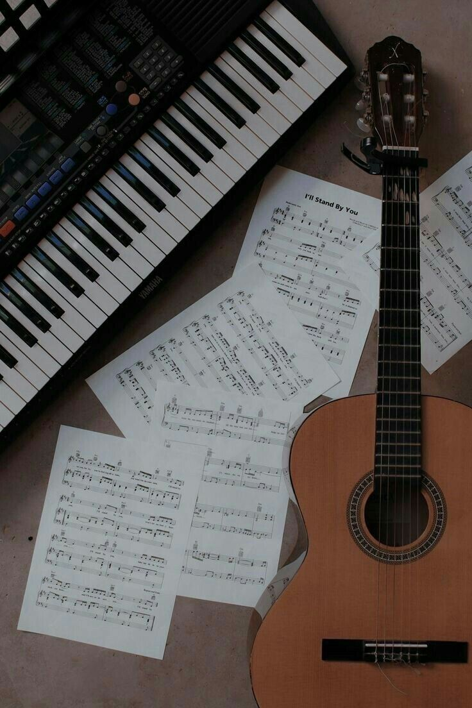
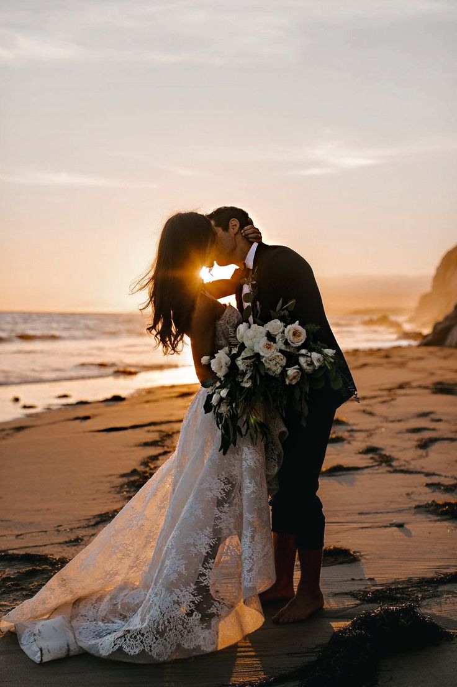
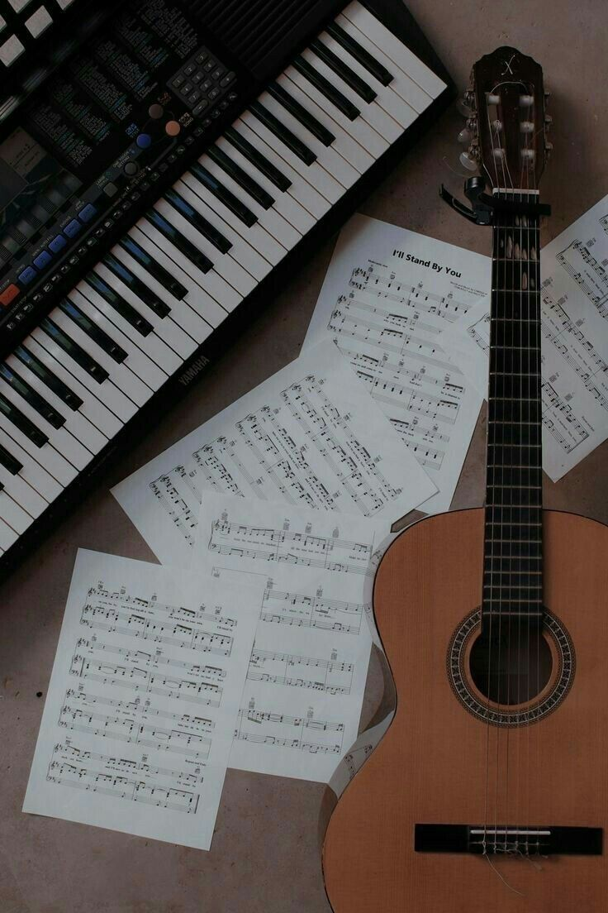
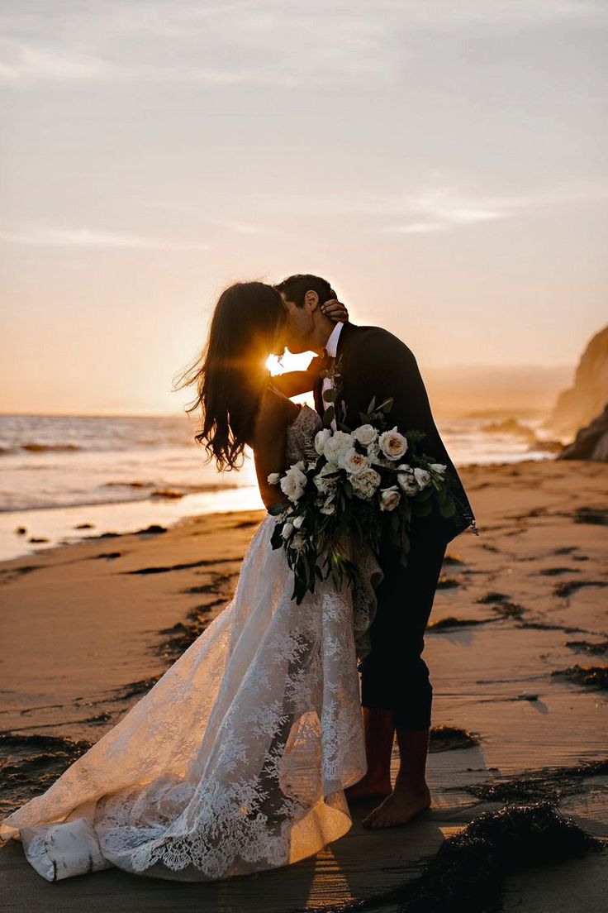

Portafolio digital Estudiantes Cesde
Este es un portafolio digital, donde se muestra informacion acerca de uno de los estudiantes del Tecnico Cesde incluyendo su experiencia, itereses y proyectos.
Este es un portafolio digital, donde se muestra informacion acerca de uno de los estudiantes del Tecnico Cesde incluyendo su experiencia, itereses y proyectos.
Soy Leandro, mi nombre completo ya lo mencione anteriormente. Tengo 17 años y vivo en el Barrio La Gabriela, Bello.
Soy uno de los estudiantes de la institucion educativa Cesde. En estos momentos, estoy estudiando desarrollo de software, de hecho, esta pagina es uno de los parciales.
Al mismo tiempo, tambien estoy terminando mi nivel educativo en el grado 11, en el Colegio Parroquial Juan Pablo II, en Bello.
Me uni a estudiar desarrollo de software, por recomendacion, y porque me enseñaron algo basico de programacion en el colegio con PseInt y me llamo mucho la atencion seguir aprendiendo
Naci aqui mismo en Bello, y he vivido casi toda mi vida en el mismo barrio, aunque a mis 6 años me fui a vivir durante un año a Cali y luego volvi a Bello.
En 2020, por temas laborales me fui a vivir a Cartago Valle de Cauca con mis padres, alla comence a trabajar en algunos negocios de familiares y complete dos cursos uno de culinaria y otro de ingles.
En 2022 regrese a bello, a terminar mis estudios y a trabajar en una panaderia donde actualmete sigo trabajando.
Me gustan los videojuegos, la cocina, el anime, los juegos de mesa y salir con familia y amigos.
Por ultimo, menciono que vivo con 4 personas mas: mi papá, mi mamá, y mis dos hermanitas.

Mi experiencia en el campo de la programacion es casi nula, por la razon de que apenas saldre del colegio y aun no llevo ni la preparacion para introducirme en el mundo laboral del desarrollo de software
Lo unico que podria llamarse experiencia seria lo que me enseñaron en el colegio, lo cual fue muy basico como dije anteriormente. Otra cosa que podria llamarse experiencia seria mis anteriores trabajos, que con ellos aprendi atencion al cliente y manejo de cuentas.
Ya de aqui en adelante lo que tenga por experiencia sera lo que obtenga estudiando en Cesde y lo que obrtendre en el mundo laboral, mas centrado en el desarrollo de software.
Lo que queda por mencionar, mas que experiencia, serian proyectos a futuro.

En proyectos academicos podemos ver dos:


Estos incluyen mis intereses personales, mi planeacion para un futuro, mi planeacion para mi vida laboral y posibles ideas.
 


